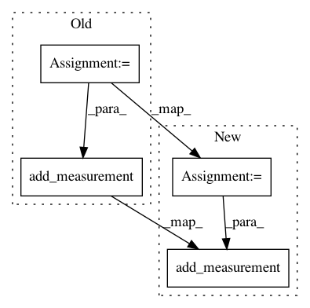

30e1eefaaa37f70df5e174a9effd4e3b7bb38100,pyCellProfiler/cellprofiler/modules/measureimagequality.py,MeasureImageQuality,calculate_saturation,#MeasureImageQuality#Any#Any#,407
Before Change
float(pixel_count))
percent_saturation_name = "%s_%s_%s"%(IMAGE_QUALITY, PERCENT_SATURATION,
image_name)
percent_maximal_name = "%s_%s_%s"%(IMAGE_QUALITY, PERCENT_MAXIMAL,
image_name)
workspace.add_measurement(cpmeas.IMAGE, percent_saturation_name,
percent_saturation)
workspace.add_measurement(cpmeas.IMAGE, percent_maximal_name,
percent_maximal)
return [["%s saturation"%image_name,"%.1f %%"%percent_saturation],
["%s maximal"%image_name, "%.1f %%"%percent_maximal]]
def calculate_threshold(self, image_group, workspace):
After Change
float(pixel_count))
percent_minimal = (100.0 * float(number_pixels_minimal) /
float(pixel_count))
percent_maximal_name = "%s_%s_%s"%(IMAGE_QUALITY, PERCENT_MAXIMAL,
image_name)
percent_minimal_name = "%s_%s_%s"%(IMAGE_QUALITY, PERCENT_MINIMAL,
image_name)
workspace.add_measurement(cpmeas.IMAGE, percent_maximal_name,
percent_maximal)
workspace.add_measurement(cpmeas.IMAGE, percent_minimal_name,
percent_minimal)
return [["%s maximal"%image_name,"%.1f %%"%percent_maximal],
["%s minimal"%image_name, "%.1f %%"%percent_minimal]]
In pattern: SUPERPATTERN
Frequency: 3
Non-data size: 4
Instances
Project Name: CellProfiler/CellProfiler
Commit Name: 30e1eefaaa37f70df5e174a9effd4e3b7bb38100
Time: 2009-12-17
Author: thouis@1fc53939-2000-0410-845c-e8453a809027
File Name: pyCellProfiler/cellprofiler/modules/measureimagequality.py
Class Name: MeasureImageQuality
Method Name: calculate_saturation
Project Name: CellProfiler/CellProfiler
Commit Name: f910ef92879ece0b5093ae7f8352713c7cd94270
Time: 2010-12-22
Author: mbray@1fc53939-2000-0410-845c-e8453a809027
File Name: cellprofiler/modules/loadsingleimage.py
Class Name: LoadSingleImage
Method Name: run
Project Name: CellProfiler/CellProfiler
Commit Name: be56e5bb24a7049e2d1d9114aeb48ba94d1aca8d
Time: 2013-11-06
Author: leek@broadinstitute.org
File Name: cellprofiler/modules/relateobjects.py
Class Name: RelateObjects
Method Name: run